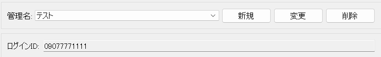

【プリラック】マニュアル
プリラック 使用マニュアル
1. はじめに
プリラックは、オークタウンから落札情報を自動的に取得し、Excelファイルへの出力と画像ファイルの振り分けを行うツールです。このツールを使用することで、落札データの管理を効率化し、印刷用の画像ファイルを適切に整理することができます。
2. 動作に必要なもの
- OS: Windows 10 / 11
- Webブラウザ: Google Chrome (最新版を推奨、ツールが内部的に操作します)
- インターネット接続: オークタウンへのアクセスに必要です。
- オークタウンアカウント: 事前にオークタウンにログインし、必要な初期設定を済ませておく必要があります。
- ディスク空き容量: プリラック本体と、処理するデータ（Excelファイル、画像ファイル）を保存するための十分な空き容量が必要です。
- ウイルス対策ソフトに関する注意: ウイルス対策ソフトがプリラックの動作を妨げないように設定を確認してください。必要に応じて、プリラックの実行ファイルを除外設定に追加してください。
3. 準備と起動方法
- ダウンロードと展開:
- 配布された
プリラック.zipファイルを、任意の場所にダウンロードします。
- 重要: デスクトップやOneDriveの同期フォルダ、その他特殊なアクセス権が要求される可能性のある場所（例:
C:\\Program Files直下など）は避けてください。C:\\プリラックやD:\\ツール\\プリラックのように、シンプルなパスのフォルダを作成して展開することを推奨します。
- ダウンロードした
プリラック.zipファイルを右クリックし、「すべて展開...」を選択して、作成したフォルダに展開します。
- 配布された
- Google Chromeの確認:
- お使いのPCにGoogle Chromeがインストールされていることを確認してください。インストールされていない場合は、事前にGoogle Chromeをインストールしてください。プリラックは内部的にChromeを使用してオークタウンの情報を取得します。
- プリラックの起動:
- 展開先のフォルダ内にある
プリラック.exeをダブルクリックして起動します。
- 初回起動時は、必要なファイルが一時フォルダに展開されるため、起動に少し時間がかかることがあります。
- 起動時に「WindowsによってPCが保護されました」というSmartScreenフィルターのメッセージが表示された場合は、「詳細情報」をクリックし、「実行」ボタンを押してください。
- 展開先のフォルダ内にある
4. メイン画面の構成と設定項目 (GUI準拠・新具体例反映版)
プリラックを起動するとメイン画面が表示されます。画面は大きく分けて上部の設定エリアと下部の実行エリアで構成されています。以下に、画面の上から順に各項目の意味と設定方法を説明します。
例として、以下の設定で説明を進めます。
{kind=link}
4.1. 認証情報エリア
画面の最上部には、オークタウンへのログインに必要な情報を設定する箇所があります。
- 管理名:
- 今回の作業設定を識別するための名前を入力します。例えば「月次処理用」「特定商品用」など、分かりやすい名前を自由につけることができます。前回入力した管理名はドロップダウンリストに記憶され、選択することで過去の設定を呼び出すことができます。
- 例:
テストと入力します。
 - ここで入力された管理名は、設定情報を保存・読み込みする際のキーとして利用されます。入力された管理名に基づいて、関連するログインID、および後述する各種設定がローカルに保存され、次回起動時にこの管理名を選択するとそれらの設定が自動的に画面に反映されます。
{kind=link}
- ログインID:
- オークタウンのログインに使用するID（電話番号かメールアドレス）を入力します。
- 例:
09077771111と入力します。
- ここで入力されたIDは、オークタウンへの自動ログイン処理に使用されます。

4.2. 主な動作
実行する主な処理を選択します。
- オークタウンから落札データを取得しExcelへ出力:
- このラジオボタンを選択すると、プリラックはオークタウンにログインし、発送連絡のステータスになっている落札情報を取得し、Excelファイルに出力します。
- 画像を振り分け:
- プリラックは指定されたExcelファイルを読み込み、その情報に基づいて指定されたフォルダ内の画像ファイルを価格帯別に仕分けします。
4.3. ファイル設定エリア
データの入出力先となるフォルダを指定します。
- 画像フォルダパス:
- 落札画像が保存されている親フォルダを指定します。
- 例:
:/13_ヤフオク/02_Adult_あんず/日付フフォルダ

- 出力フォルダパス:
- 落札画像を仕分ける先のフォルダを指定します。
- 例:
D:/13_ヤフオク/02_Adult_あんず/06_落札画像まとめ
4.4. フォルダ振り分けモード
- 落札者IDごとにフォルダ作成:
- チェックを入れると、「出力フォルダ」内に落札者IDごとのサブフォルダが作成され、その中に対応する画像ファイルが保存されます。
- チェックを入れる場合: 落札者ごとに画像をまとめたいとき。

- チェックを外す場合: すべての画像を落札者IDで区別せず、一括で「出力フォルダ」直下に保存したいとき。

- 即決価格:
- 即決価格に設定した金額以上の落札データを即決欄に出力します。どの商品が即決、または一定金額を満たしたか出力されたExcelで判定できます。

- 即決価格に設定した金額以上の落札データを即決欄に出力します。どの商品が即決、または一定金額を満たしたか出力されたExcelで判定できます。
- 価格振り分けを有効にする:
- チェックを入れると、後述する「価格帯振り分け設定」で設定した下限値に基づいて、画像を"Low", "Middle", "High"の各フォルダに振り分けます。
- チェックを入れる場合: 落札価格に応じて画像を異なるグレードのフォルダに分類したいとき。

- チェックを外す場合: Lowのみに仕分けたい場合

4.5. 価格帯振り分け設定D
落札価格に応じて画像の印刷グレードを分けるための価格範囲を設定します。印刷に使用するファイルは必ずjpg形式である必要があります。
- Low (下限値):
- この金額以上のものが"Low"カテゴリとなります。印刷発送代行では通常用紙+6色インクでの印刷に該当します。
- Middle (下限値):
- この金額以上のものが"Middle"カテゴリとなります。印刷発送代行では高級用紙+6色インクでの印刷に該当します。
- High (下限値):
- この金額以上のものが"High"カテゴリとなります。印刷発送代行では高級用紙+10色インクでの印刷に該当します。

- チェックボックス (各価格帯の左側):
- 各価格帯（Low, Middle, High）の左側にあるチェックボックスは、その価格帯の振り分け処理を有効にするかどうかを指定します。
- チェックを入れる場合: その価格帯での振り分けを行いたいとき。
- チェックを外す場合: その価格帯を使用したくない（その価格帯のフォルダを作成せず、該当する価格の画像も振り分け対象外としたい、または別のルールで処理したい）とき。例えば、"Middle"のグレードを使いたくない場合は、"Middle"のチェックを外します。

- 価格帯設定の注意点:
- 下限値は必ず「Low の下限値 < Middle の下限値 < High の下限値」となるように設定してください。

- 矛盾する値（例: Lowの下限値がMiddleの下限値よりも高い）を入力して実行しようとすると、エラーメッセージが表示され処理が中断されるか、予期せぬ振り分け結果になる可能性があります。

- 下限値は必ず「Low の下限値 < Middle の下限値 < High の下限値」となるように設定してください。
4.6. おまけ機能エリア
- おまけ機能を有効にする:
- チェックを入れると、特定の条件を満たした落札者に対して、おまけの画像を提供するための処理が有効になります。「出力フォルダ」内に別途「おまけ_XX」の名前の空フォルダが作成され、その中に自身で画像をコピーします。
- チェックを入れる場合: おまけ機能を利用したいとき。

- チェックを外す場合: おまけ機能を利用しないとき。

4.7. 実行コントロールエリア
画面下部には、処理の開始やログ表示を行うボタンがあります。
- 1.一括実行:
- このボタンを選択し実行すると、画面上で設定された内容に基づいて、オークタウンから落札データを取得しExcelへ出力し、Excelを読み込み画像を振り分けします。

- このボタンを選択し実行すると、画面上で設定された内容に基づいて、オークタウンから落札データを取得しExcelへ出力し、Excelを読み込み画像を振り分けします。
- 2.落札データ取得:
- このボタンを選択し実行すると、画面上で設定された内容に基づいて、オークタウンから落札データを取得しExcelへ出力ます。
- 3.画像振り分けのみ:
- 1.または2.で作成されたExcelを元に画像を振り分けます。
5. 主な機能の動作詳細
5.1. オークタウンから落札データを取得しExcelへ出力
- 認証とログイン:
- 実行するとオークタウンアクセスしログインが実行されます。
- 落札データ取得:
- オークタウンの「落札分」のページから「発送連絡」のステータスの落札データを抽出します。
- 1ページずつ情報を取得し、複数ページにわたる場合は全ページを巡回します。
- Excelファイルへの出力:
- 取得した落札情報（商品名、落札価格、落札者IDなど）を整形し、指定されたExcelファイルに出力します。
5.2. Excelを読み込み画像を振り分け
- Excelファイルの読み込み:
- 指定されたExcelファイルを読み込み、必要な情報を抽出します。
- 画像ファイルの探索:
- 「画像フォルダパス」内で画像ファイルを探索します。
- 価格帯に基づく振り分け :
- 「価格振り分けを有効にする」がチェックされている場合、各画像に対応するExcel上の落札価格と、「価格帯設定エリア」で設定された下限値、および有効な価格帯（チェックが入っているもの）に基づいて、画像を"Low", "Middle", "High" のいずれかのサブフォルダに移動またはコピーします。
- 例えば、Low下限値
0, Middle下限値3000, High下限値10000で、全てにチェックが入っている場合:- 価格が
0～2999円の商品は "Low" フォルダへ
- 価格が
3000～9999円の商品は "Middle" フォルダへ
- 価格が
10000円以上の商品は "High" フォルダへ
- 価格が
- チェックが外れている価格帯のフォルダは作成されず、その価格帯の商品は振り分け対象外となるか、別のルール（例えば、チェックが外れたMiddleに該当する商品はLowとして扱われるなど、ツールの具体的な実装に依存）で処理されます。
- 落札者IDごとのフォルダ作成 (オプション有効時):
- 「落札者IDごとにフォルダを作成する」がチェックされている場合、上記の価格帯別フォルダ（または価格振り分け無効時は「出力フォルダ」直下）の中に、さらに落札者IDごとのサブフォルダを作成し、その中に該当する画像を格納します。
- チェックされていない場合は、落札者ID別のサブフォルダは作成されません。
- 処理の完了:
- 処理完了のメッセージが表示されれば完了です。
6. トラブルシューティング
- プリラックが起動しない / エラーが表示されて終了する:
- デスクトップやOneDriveの同期フォルダ、その他特殊なアクセス権が要求される可能性のある場所に
プリラック.exeを置いている。
プリラック.exeを展開したフォルダパスに特殊文字が含まれている場合、それが原因で起動しないことがあります。C:\\PriRakkuのようなシンプルな半角英数字のパスでお試しください。
- ウイルス対策ソフトが誤って
プリラック.exeをブロックまたは削除していないか確認してください。
- デスクトップやOneDriveの同期フォルダ、その他特殊なアクセス権が要求される可能性のある場所に
- オークタウンにログインできない:
- ログインID、パスワードが正しいか再確認してください。大文字・小文字も区別されます。
- オークタウン側で一時的な障害が発生しているか、メンテナンス中の可能性があります。時間をおいて試してください。
- オークタウンのログインページのデザインが大幅に変更された場合、プリラックが対応できなくなることがあります。
- Excelファイルが正しく出力されない / 画像が正しく振り分けられない:
- Excelファイルや出力フォルダのパス指定が正しいか確認してください。存在しないパスを指定しているとエラーになることがあります。
- Excelファイルが他のプログラムで開かれている（ロックされている）場合、書き込みに失敗することがあります。Excelを閉じてから再度実行してください。
- 価格帯設定の数値（特に大小関係）が正しいか確認してください。矛盾があると期待通りに振り分けられません。
- ログエリアにエラーメッセージが表示される:
- エラーメッセージの内容をよく読み、原因を特定する手がかりにしてください。不明な場合は、エラーメッセージ全文を控えて開発者に問い合わせることを検討してください。
7. よくある質問（FAQ）
- Q1: プリラックは無料ですか？
- A1: スクール会員は無料です。スクール会員でない方は有料です。
- Q2: MacやLinuxでも使えますか？
- A2: いいえ、現在のプリラックはWindows専用です。
- Q3: 複数のオークタウンアカウントで利用できますか？
- A3: はい、「管理名」機能を使用することで、アカウントごとに設定を保存し切り替えて利用できます。
- Q4: 処理中にPCがスリープしたりシャットダウンしたりしても大丈夫ですか？
- A4: いいえ、処理が中断されるため、完了するまでPCの電源設定でスリープモードにならないようにしてください。
- Q5: 取得できる落札データの期間に制限はありますか？
- A5: オークタウン側が提供している履歴の範囲に依存します。
- Q6: 価格振り分けの価格帯は自由に変更できますか？
- A6: はい、メイン画面の「価格帯設定エリア」で各下限値を自由に変更できます。ただし、Low < Middle < High の大小関係は守ってください。
8. 安全なご利用のために
- プリラックはオークタウンの利用規約を遵守してご利用ください。自動化ツールを禁止している場合や、過度なアクセスを制限している場合があります。
- 提供元が不明な
プリラック.exeや改変されたツールの使用は避けてください。公式サイトや信頼できる配布元から入手してください。
- 予期せぬ動作や不具合を発見した場合は、速やかに使用を中止し、開発者に報告してください。
- このマニュアルに記載されている内容は、ツールのバージョンアップ等により変更される可能性があります。最新の情報をご確認ください。
- プリラックを使用して発生したいかなる損害についても、開発者は責任を負いかねる場合があります。自己責任においてご利用ください。